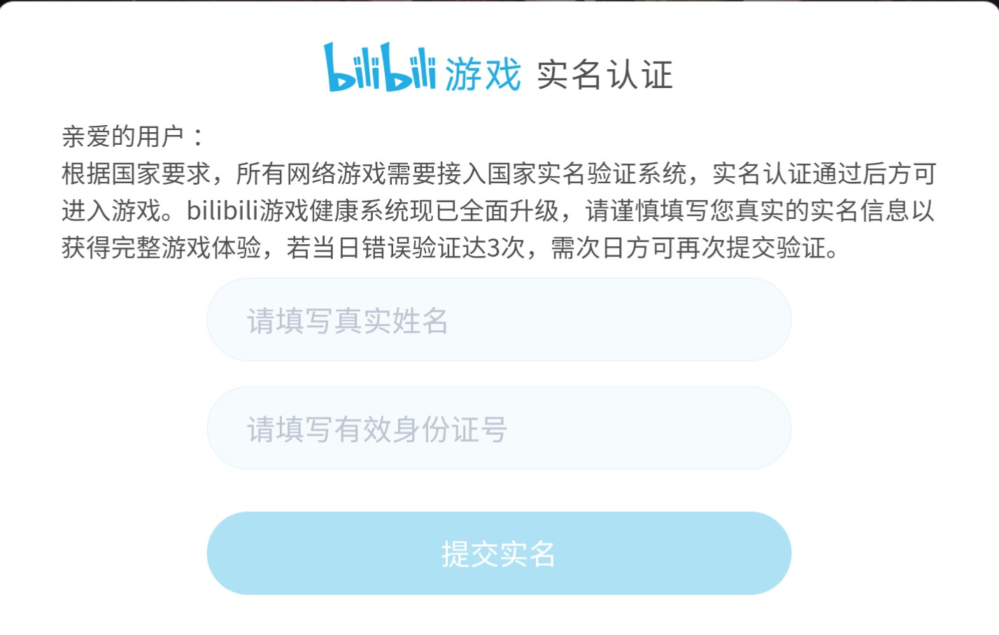

ビリビリゲーム（哔哩哔哩游戏）実名認証方法
注意：本ページは、2021年6月末までに作成者が知った情報をもとに作成されています。作成者は、本ページに記載されている内容の正確性・最新性・完全性を保証しません。

これはビリビリゲームが実名認証を求める画面です。さる2021年6月1日より、ビリビリゲームは、青少年のゲーム中毒対策を強化するため、国家レベルの新しい実名認証システムに接続しました[1]。そのため、この画面で入力した実名情報は中宣部（中国共産党中央宣伝部）によりバックグラウンドでチェックされ、統一的に管理されます。したがって、ここでは、実名に加えて、中華人民共和国居民身分証に記載された公民身分番号（中国大陸に戸籍がある中国人に割り当てられる番号）を入力する必要があります。
このように、この画面で実名認証を完成させられるのは、中華人民共和国居民身分証を所持する中国人に限られます。そのため、中華人民共和国居民身分証を所持していない中国人や外国人は、ビリビリゲームの運営にメール（emailアドレス:gamehelp[At sign]bilibili.com）を通じて実名認証を申請する必要があります。
【コラム】ビリビリの実名認証システムについて
ビリビリには、メインページの実名認証とビリビリゲームの実名認証があります。これらは別物ですから、メインページの実名認証を完成させても、ビリビリゲームの実名認証を完成できません。
中華人民共和国居民身分証を所持していない中国人や外国人は、公表されている資料によると、ビリビリゲームの実名認証を完成させるために以下の情報を提供する必要があります[2]。
1.证件类型： 実名認証に使う証明書の種類です。
2.真实姓名： 本名です。
3.证件号码： 証明書に書かれている番号です。正確に記入しましょう。
4.联系方式：（电话，或者邮箱） 連絡に利用可能な電話番号かメールアドレスを書きます。
5.游戏账号： ゲームをプレイするために使うビリビリアカウントの名前です。
6.游戏帐号绑定信息：（绑定的手机或邮箱） ビリビリアカウントに登録された携帯電話番号かメールアドレスです。
7.B站UID：（请您用游戏账号登陆bilibili官网，可在个人页面中查看的数字ID） ビリビリのユーザーIDです。メインページのユーザーページ（ここ）を開いて右部分を注意深く見ると、水色の[UID]の右側に見つけられるでしょう。
8.证件正面照片（请放置在申请邮件附件内） 証明書を正面から撮った写真を添付します。
9.申请人本人手持证件照片（请放置在申请邮件附件内） 証明書を手に持った自撮り写真を添付します。
以上の情報を準備して、ビリビリゲームの運営にメールを通じて実名認証を申請します。実名認証の審査を通過すれば実名認証が完成します。
ビリビリゲームの実名認証を一度完成させれば、追加の認証をしなくても、ビリビリゲームが提供する他のゲームもプレイできます。ぜひ快適なビリビリゲームライフをお楽しみください。
参考リンク
[1] 哔哩哔哩游戏客服娘的动态 【bilibili游戏实名认证系统升级说明】
[2] 哔哩哔哩游戏账号实名认证——海外及中国港澳台用户